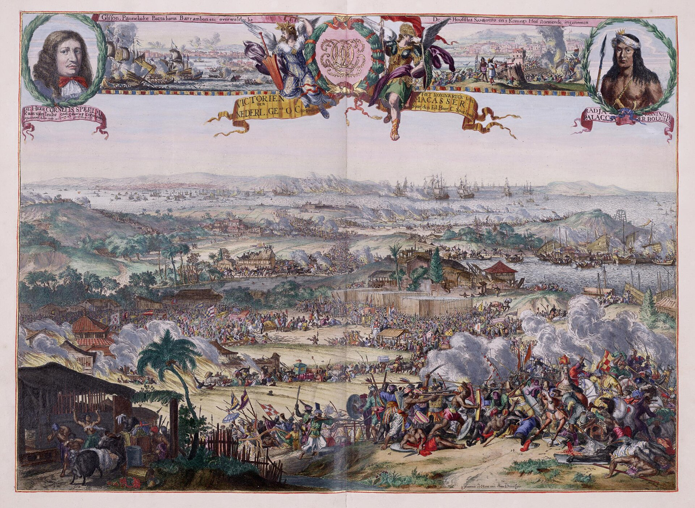

Chapter 13
The King in the Street
The Guildhall had burned through the night. Its stone shell still stood, but the roof was gone and the archives inside—deeds, charters, the accumulated parchment of centuries—had fed the flames that now pushed westward toward the river. Monday morning, 3 September 1666, found London governed by vacancy. The Corporation of the City, whose authority had been constructed so carefully through the years of Cromwell and the Restoration, now met in borrowed rooms or not at all. Its Lord Mayor, Thomas Bloodworth, had refused the night before to pull down houses in the fire’s path. The decision still stood, unreversed and unenforced, while the fire made its own policy.
In this state of emergency, with order breaking down in the streets and the Lord Mayor’s name absent from any contemporaneous accounts of the Monday’s events, the King put his brother James, Duke of York, in charge of operations.
Into this absence rode two men on horseback. Charles II, thirty-six years old, had returned to London in February 1666 after fleeing the plague the year before. His brother James, Duke of York, was thirty-three, a naval commander with experience of shipboard discipline and the management of large, dangerous machines. They came not from Whitehall by river, the customary route for royalty entering the City, but through the streets themselves, picking their way among the refugees and the smoking ruins. Samuel Pepys, who saw them later that morning, recorded their presence with the precision of a man who understood what it meant: the King was now in the street.
The phrase carried weight. The Restoration settlement had fixed the boundaries of royal and municipal power with anxious exactitude. Charles II possessed the throne, the army, the navy, and the revenues voted by Parliament. The City of London possessed its charter, its customs, its trained bands, and its ancient right to manage its own streets. The two jurisdictions touched at many points but merged at none. Now, with the Guildhall in ashes and the Lord Mayor either absent or ignored, those boundaries dissolved in practice if not in law. The King and his brother took charge of firefighting operations with the authority of men who saw no alternative and asked no permission.
Their first efforts concentrated on the area east of the Tower, where Thames Street ran parallel to the river and the fire had established its most dangerous bridgehead. Here the royal brothers attempted to impose order on what had been, by all accounts, chaos. Sailors from the naval dockyards at Deptford and Woolwich had been pressed into service, along with soldiers from the Tower garrison and whatever citizens could be compelled or persuaded to join them. The task was demolition: houses must be pulled down ahead of the flames to create gaps the fire could not cross. The Romans had used this method; every treatise on fire management prescribed it. It required coordination, tools, and the willingness to destroy property that might still be saved.
The King and Duke issued orders directly. Pepys, who followed their movements through the day, noted that they commanded the houses be pulled down in specific locations, overriding whatever local reluctance remained. Command without mediation: no lord mayor, no aldermen, no committees. The naval officers who accompanied the Duke of York understood this language. They had spent their careers directing men in dangerous work under time pressure. The sailors they brought with them were accustomed to following shouted orders in circumstances where hesitation meant death. Whether this discipline could be transferred to land, to burning streets, against an enemy that advanced faster than any ship, remained to be seen.
The contrast with Bloodworth’s conduct could not have been sharper. The Lord Mayor had been at the fire’s outbreak in the early hours of Sunday, had pronounced it negligible, had gone home to bed. He had refused, when roused again, to authorize the destruction of houses on the ground that the owners could not be found and compensated. Obstruction was not the whole of it. His refusal represented a theory of municipal responsibility: the Corporation governed by consent and custom, not by emergency decree. To pull down a man’s house without his permission was to violate the property rights that underpinned the City’s commercial life. Bloodworth had chosen formal correctness over effective action, and the fire had made him pay for it.
Now the King and Duke acted on different principles. They did not wait for consent. They did not measure the cost of demolition against the claims of ownership. They commanded, and expected obedience, because the alternative was the destruction of everything. The logic of sovereignty pressed to its extreme: in moments of existential threat, normal jurisdictions suspended themselves and power flowed to whoever could wield it. The Restoration had been built on a fear of exactly this concentration of authority. Men had died at Charing Cross in 1660 for the crime of regicide; the new regime had been constructed, in part, to prevent any future Cromwell. Yet here was Charles II, exercising prorogued powers in the streets of his capital, and no one protested.
The physical reality constrained even royal will. The fire moved faster than demolition could precede it. The wind, which had blown steadily from the east since Sunday, drove the flames across gaps that seemed adequate, igniting timbers on the far side before the wreckage could be cleared. The houses of London were built to burn: timber frames, plaster walls, thatch or shingle roofs, each floor projecting beyond the one below to shelter the goods piled in the street. The materials of prosperity—oil, tar, hemp, coal—were stored in cellars and warehouses throughout the riverside district. The fire found this fuel and consumed it with mechanical efficiency, indifferent to the commands shouted against it.
By midday the royal brothers had moved their operations westward, following the fire’s advance along Thames Street toward the heart of the commercial City. Here they attempted more ambitious demolitions, using gunpowder where hand tools proved too slow. The work was dangerous. A building brought down with powder had to be calculated like a siege operation: too little and the structure stood, too much and the explosion scattered burning debris across the intended firebreak. The Duke of York, with his naval experience, understood these calculations better than most. He had directed gunnery exercises, had seen what disciplined crews could accomplish with dangerous materials under pressure.
Yet the scale of the operation overwhelmed the available resources. The fire had too many fronts, moved too fast, destroyed too much that might have served as base for counter-operations. The sailors and soldiers, however willing, were too few. The citizens, however alarmed, could not be organized quickly enough into effective teams. The tools—hooks, axes, ropes for pulling—were inadequate to the number of buildings that needed to come down. And always there was the wind, carrying sparks across the widest gaps, igniting new fires faster than the old could be contained.
Pepys, moving through the same streets, recorded the growing desperation. He saw the King and Duke at their work, giving directions, and noted the effect on those around them: the people crying out for help. The response was not the ordered deference of subjects to their sovereign. It was the appeal of the drowning to any passerby who might extend a hand. The normal structures of deference and command, which the Restoration had so carefully reconstructed, had collapsed into something more primitive: the strong must save the weak, or all would perish together.
The afternoon brought no relief. The fire continued its westward march, crossing Bread Street, approaching Cheapside, threatening the great houses of the goldsmiths and mercers who had made London the financial capital of Europe. The royal brothers persisted in their efforts, moving from point to point as each position became untenable. They were seen at the Tower, at the riverfront, in the narrow lanes where the flames advanced most rapidly. Their presence was remarked by multiple witnesses: Pepys, anonymous chroniclers, foreign correspondents, the authors of letters that would survive in family archives. The King in the street was an image that fixed itself in the public memory, to be invoked later when the reckoning came.
What they could not do was decisive. The firebreaks they ordered were breached as fast as they were made. The houses they pulled down were replaced in the fire’s path by others already burning. The coordination they attempted between naval, military, and civilian forces never achieved the integration that naval warfare required. Each group operated with partial knowledge, partial tools, partial commitment, while the fire operated as one thing across the whole field of battle.
This failure was not personal. Charles II and the Duke of York worked as hard as any men could have worked, exposed themselves to the same dangers as their subordinates, made decisions with the information available. The failure was structural. The city they attempted to save had outgrown its defenses. The mechanisms of firefighting—hand-pumped engines, water cisterns, demolition crews—had been designed for localized outbreaks, for the single building or the single street. They could not be scaled to a conflagration that moved faster than news of it, that destroyed the very infrastructure required to oppose it.
The royal intervention thus represented both an advance and a limit. It broke through the jurisdictional paralysis that had crippled the initial response. It brought resources and discipline that the Corporation could not muster. Yet it could not transform the fundamental imbalance between the city’s vulnerability and its capacity for defense. The fire was too large, too fast, too well-fueled. Sovereignty, however exercised, could not repeal the physics of combustion.
Evening found the King and Duke still in the streets, still directing operations that grew more desperate as darkness fell. The fire, unchecked by daylight, became more visible and more terrifying: a wall of flame advancing through the commercial heart of England, illuminating the sky for miles around. Refugees continued to stream westward, carrying what they could save, abandoning what they could not. The river was choked with boats, some offering escape at prices that rose with the danger, others simply fleeing downstream with their cargoes of frightened passengers.

Pepys, who had observed the royal brothers throughout the day, ended his own Monday with a characteristic mixture of engagement and withdrawal. He had carried messages, witnessed destruction, recorded the King’s presence for his diary. Now he took boat to Woolwich, to check on the safety of his own property and his wife. The fire followed him in his thoughts. He noted it growing still, beginning to approach Barking Church. The personal and the public could not be separated. The diarist who noted the King’s commands was the same man who worried about his house, his goods, his place in a city that might cease to exist.
The historical pattern is instructive. Charles II had fled the plague in 1665, removing his court to Salisbury while Parliament met in Oxford. He had returned only when the danger passed, resuming his position at the center of a political system that required his physical presence. Now, with the fire, he reversed this pattern. He went toward the danger, not away from it. Courage it certainly required, but courage was not the whole calculation. Legitimacy was. The king who abandoned his capital to plague might be excused; the king who abandoned it to fire could not. The Restoration monarchy was still young enough to need such demonstrations, still fragile enough that its critics remembered the republic and wondered whether they missed it.
The Duke of York established a command post at Temple Bar, where the Strand met Fleet Street, preparing for the fire’s expected advance into the western suburbs. This was Tuesday’s work, still in the future as Monday ended. The position was strategic: here the medieval city gave way to the newer developments of the seventeenth century, the great houses of the aristocracy and the Inns of Court where the lawyers conducted their business. Tuesday, 4 September would be the day of greatest destruction. The Duke’s post at Temple Bar was supposed to stop the fire’s westward advance towards the Palace of Whitehall. If the fire could be stopped here, much might be saved. If not, the destruction would continue into Westminster itself, toward the palace and the abbey and the seat of national government.
The royal presence had changed the terms of the struggle without changing its outcome. The King and Duke had demonstrated that authority could be exercised directly, that the complicated negotiations of Restoration politics could be suspended in face of emergency. They had also demonstrated the limits of such authority. Commands could be issued, houses pulled down, men organized into teams. The fire could not be commanded. It advanced through the night, indifferent to sovereignty, consuming the ground that the royal brothers had tried to save.
The sailors from Deptford and Woolwich brought with them a particular kind of expertise that proved both valuable and insufficient. They understood ropes and tackle, the mechanical advantage of block and pull, the way a crew must work together under a boatswain’s whistle. Naval dockyards had trained them to dismantle rigging quickly, to clear wreckage after storms, to improvise repairs with whatever materials lay at hand.
Transferred to burning streets, they could pull down a house faster than landsmen, could rig a line to topple a chimney, could work in smoke that would have choked men unaccustomed to the closed air below decks.
Yet they were not equipped for urban warfare against flame. They lacked the heavy hooks designed for demolition, the long-handled axes that could reach through a window to sever a burning beam, the leather buckets that could hold water long enough to douse a spark. The navy had sent men, not materiel, and the City had never maintained stores for catastrophe on this scale.
The soldiers from the Tower garrison presented a different problem of adaptation. They were infantry, trained to stand in line, to receive cavalry, to hold ground or take it by assault. Firefighting required none of these disciplines.
It demanded instead the initiative of small groups, the willingness to enter collapsing structures, the judgment to know when a house was too far gone to save and must be destroyed for the safety of its neighbors. Some officers understood this transition; others attempted to impose military order on chaos that would not accept it.
The Duke of York, moving between these groups, spoke a language both could understand. He had commanded men in battle, had seen how discipline frayed under extreme stress and how it might be restored by example. His presence among the demolition crews was not ceremonial. He examined the angle of a pull, calculated the fall of a wall, cursed when a building collapsed inward instead of toward the street.
The citizens who joined these efforts came from every station. Apprentices who had fled their burning shops worked alongside merchants who had lost their warehouses. Watermen from the river, whose livelihood depended on the City’s survival, hauled goods and pulled down houses with equal desperation. The trained band muster of municipal tradition, with its aldermanic hierarchy and its ward-based organization, had vanished. What replaced it was an improvised militia of catastrophe, held together by the immediate pressure of the flames and the visible authority of the royal brothers. Whether such cooperation could survive the removal of that authority remained doubtful. The Restoration had not erased the social fractures of civil war and republican experiment. Men who worked together against the fire might remember old grievances when it passed.
The gunpowder demolitions required particular courage and particular knowledge. The Duke of York had studied artillery, had directed the great guns in naval engagements, understood the mathematics of charge and distance. A house was not a fortress wall, but the principles translated: too shallow a placement and the explosion would merely scar the plaster, too deep and the blast might scatter burning timbers across the intended gap. The sailors who handled the powder had learned these calculations in the dangerous work of clearing wrecked ships, where an uncontrolled explosion could doom a vessel already damaged. Now they applied this skill to civilian architecture, drilling holes in walls that still contained trapped citizens, placing charges in cellars that might hold hidden oil or spirits. Each demolition was a gamble with stakes measured in streets and squares.
The wind that drove the fire had its own history. East winds in September were common enough, the prevailing weather of the season, yet this one persisted with unusual steadiness and unusual force. Meteorological records, such as they were, noted its duration and its direction. The sailors recognized it as the kind of wind that drove ships onto lee shores, that made harbor entrances dangerous, that could scatter a fleet across miles of open water. They knew better than to expect relief from it soon. The land they fought to save was built to catch such winds: narrow streets that channeled and accelerated the air, tall houses that presented broad surfaces to the pressure, projections and cornices that created eddies where sparks might lodge and smolder. The city and the weather had conspired to make this fire possible long before the first spark fell in Pudding Lane.
The refugees observed the royal intervention with mixed emotions. Some found hope in the visible presence of authority, in the sight of a king who worked with his hands among them.
The legal quarter lay ahead. The Inns of Court—Inner Temple, Middle Temple, Lincoln’s Inn, Gray’s Inn—housed the men who administered English law, who kept the records and conducted the litigation that made property secure and commerce possible. Their buildings were stone, more resistant than timber, but their libraries were paper and their proximity to the burning city put them at risk. The lawyers had watched the fire’s approach with the particular anxiety of men whose profession depended on the preservation of documents. They had seen the Guildhall burn, seen the civic records consumed. Now their own archives, their own precedents and pleadings, stood in the path of the same destruction.
The fire’s advance, unchecked by royal command, now threatened this institutional heart. The lawyers would not wait to be rescued. They would flee, carrying what they could, abandoning what they must, and the law itself would scatter into the streets with the rest of London’s goods.